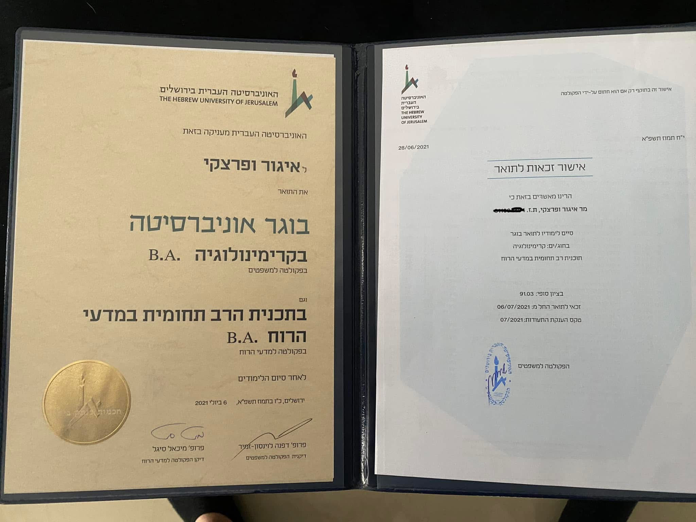

IGOR VEPRETSKI · PUBLIC MEDIA · SOURCE LINKED
לא שישה אייטמים. שנים של קול ציבורי.
ראיונות, כתבות, טלוויזיה, פודקאסטים, StartOn, אבהות, זהות ושיחות ארוכות. המקור נשאר צמוד לכל רגע; הארכיון לא מצטמצם לכמה דוגמאות.

7YA · PUBLIC MEDIA · SOURCE LINKED · מקורות וראיות